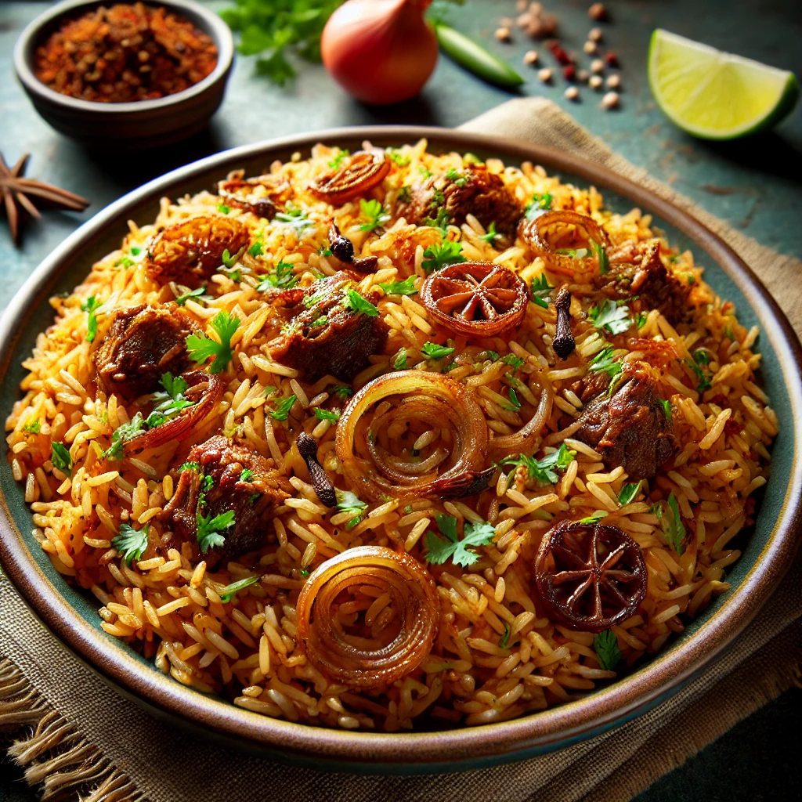
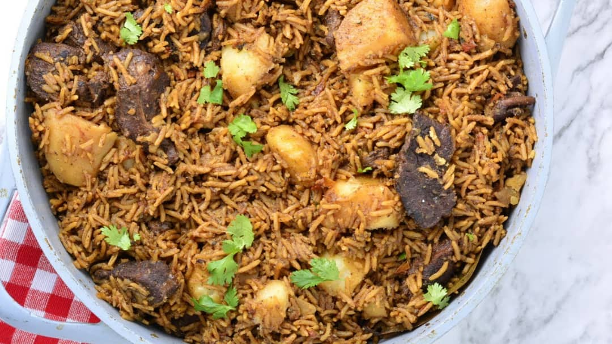
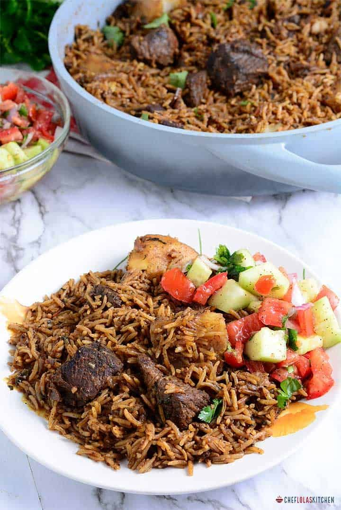
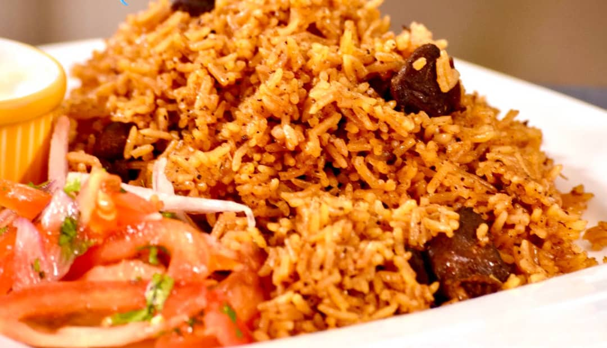
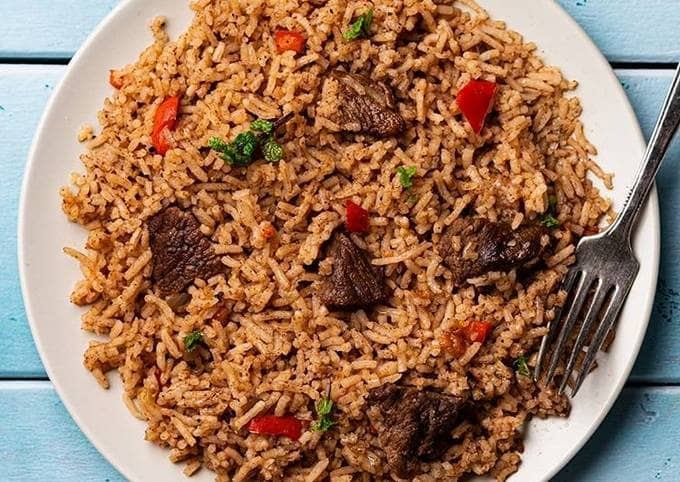
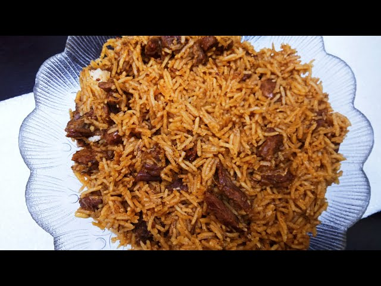

1.Prepare Meat/Chicken: Sauté onions, garlic, and ginger in oil until golden brown. Add meat or chicken, and cook until browned.
2.Add Spices: Mix in spices like cumin, cloves, cinnamon, and cardamom, and cook for a few minutes.
3.Add Rice: Add washed basmati rice, and stir to coat with the spices.
4.Cook with Stock: Pour in broth or water, bring to a boil, then simmer on low heat until rice is fully cooked.
5.Fluff and Serve: Let it rest, fluff the rice with a fork, and serve hot.
     